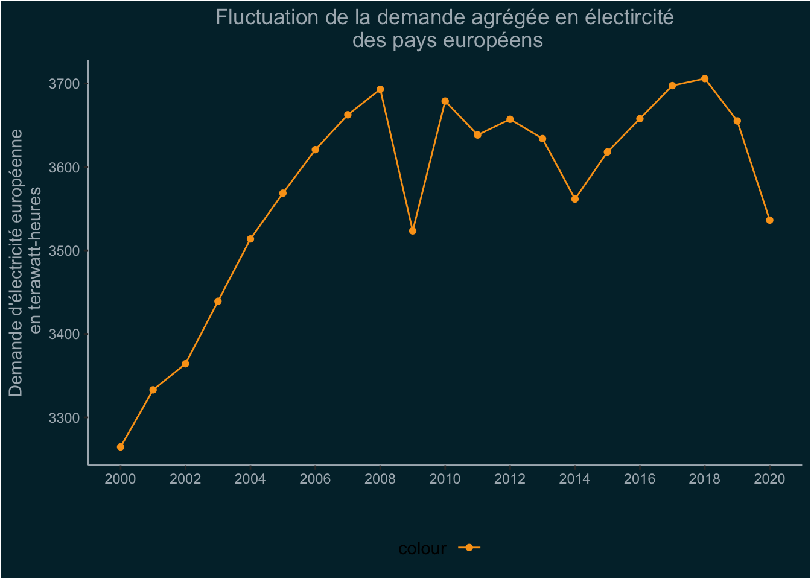
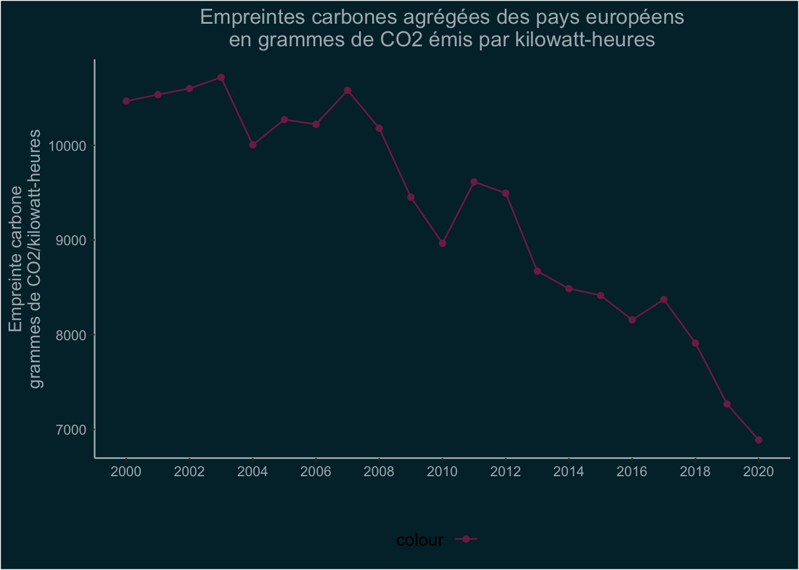
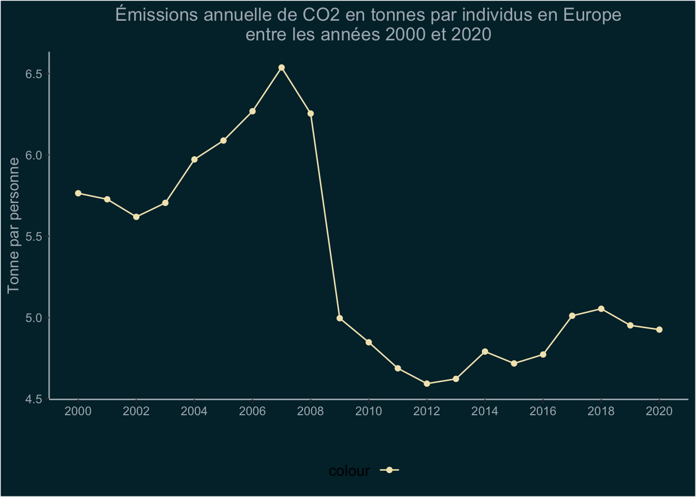

Code
library(ggplot2)
library(tidyverse)
library(rgdal)
library(rmapshaper)
library(sp)
library(sf)
library(broom)
library(maps)
library(rworldmap)
library(rnaturalearth)
library(rnaturalearthdata)
library(gridBase)
library(lessR)
library(ggrepel)analyses des données de Our World in Data
8 janvier 2023
Les banques de données nous permettent de faire des estimations pourdonner un portait de l’Europe en terme de demande d’électrcit et des émissions de carbones qu’elle émet.
À travers 2 variables de la banques de données sur les énergies il est possible d’illustrer historiquement les émissions de carbones du fait de l’augmentation de la demande d’électricité.
La variable carbon_intensity_elec présente les émissions de carbone dues à la production d’électricité et la variable electricty_demand illustre la demande de cette électricité
Il y a une augmentation de la demande de l’électricité et de ce fait une augmentation de ses coûts environnementaux.
gap_tsv <- system.file("extdata", "gapminder.tsv", package = "gapminder")
table_continent <- read.delim(gap_tsv)
table_continent <- table_continent[,c( "country", "continent")]
data_energy <- read.csv("https://nyc3.digitaloceanspaces.com/owid-public/data/energy/owid-energy-data.csv")
data_energie <- left_join(table_continent, data_energy, by = "country")
data_energie <- data_energie |>
filter(continent == "Europe")
data_energie <- data_energie |>
filter(year >= 2000)
data_energie <- data_energie[,c( "country", "continent","year","population","carbon_intensity_elec","electricity_demand")]
data_energie <- data_energie |>
distinct(country, continent, year, population,carbon_intensity_elec, electricity_demand)
demande_europe <- data_energie |>
group_by(year) |>
summarise(demande_totale =sum(electricity_demand)) |>
ungroup()
colnames(demande_europe)<- c("Annees","Demande_totale_electricite")
graph2 <- ggplot(data = demande_europe, mapping = aes(x=Annees, y = Demande_totale_electricite))+
geom_point(aes(color=""))+
geom_line(aes(color=""))+
scale_color_manual(values = c("#FAA219"))+
scale_x_continuous(limits = c(2000,2020),
breaks = c(2000,2002,2004,2006,2008,2010,2012,2014,2016,2018,2020),
labels = c("2000","2002","2004","2006","2008","2010","2012","2014","2016","2018","2020"))+
labs(x = "",
y = "Demande d'électricité européenne\n en terawatt-heures",
title = "Fluctuation de la demande agrégée en électircité\n des pays européens"
)+
theme_classic()+
theme(legend.position = "bottom")+
theme(plot.background=element_rect(fill = "#012b36"),
legend.background = element_rect(fill = "#012b36", color = NA),
panel.background = element_rect(fill = "#012b36"),
plot.title = element_text(hjust = 0.5, color = "#ACB6BD"))+
theme(axis.text = element_text(colour = "#ACB6BD"))+
theme(plot.background=element_rect(fill = "#012b36"))+
theme(axis.line = element_line(colour = "#ACB6BD"))+
theme(axis.text.x = element_text(colour = "#ACB6BD"))+
theme(axis.title.y = element_text(colour = "#ACB6BD"))
graph2
On remarque une réelle augmentation de la consommation de l’électricité au début des années 2000 avec moins de 3200 tetrawatt-heures de demande en 2000 et environ 3700 tetrawatt-heures en 2008. La demande, influencée par son pouvoir d’achat, a diminué brutalement entre 2008 et 2010, baisse pouvant s’expliquer par la crise économique de 2008. Enfin on remarque qu’à partir de 2019 la demande diminue aussi, chute qui s’explique par une baisse de la production européenne avec les diverses mesures liées au covid-19.
intensity_elec <- data_energie |>
group_by(year) |>
summarise(emission_totale =sum(carbon_intensity_elec)) |>
ungroup()
colnames(intensity_elec)<- c("Années","Émission_totales")
graph3 <- ggplot(data = intensity_elec , mapping = aes(x=Années, y = Émission_totales))+
geom_point(aes(color=""))+
geom_line(aes(color=""))+
scale_color_manual(values = c("#812856"))+
scale_x_continuous(limits = c(2000,2020),
breaks = c(2000,2002,2004,2006,2008,2010,2012,2014,2016,2018,2020),
labels = c("2000","2002","2004","2006","2008","2010","2012","2014","2016","2018","2020"))+
labs(x = "",
y = "Empreinte carbone\ngrammes de CO2/kilowatt-heures",
title = "Empreintes carbones agrégées des pays européens\nen grammes de CO2 émis par kilowatt-heures"
)+
theme_classic()+
theme(legend.position = "bottom")+
theme(plot.background=element_rect(fill = "#012b36"),
legend.background = element_rect(fill = "#012b36", color = NA),
panel.background = element_rect(fill = "#012b36"),
plot.title = element_text(hjust = 0.5, color = "#ACB6BD"))+
theme(axis.text = element_text(colour = "#ACB6BD"))+
theme(plot.background=element_rect(fill = "#012b36"))+
theme(axis.line = element_line(colour = "#ACB6BD"))+
theme(axis.text.x = element_text(colour = "#ACB6BD"))+
theme(axis.title.y = element_text(colour = "#ACB6BD"))
graph3
L’empreinte carbone des européens liée à leur consommation et production d’électricité ne cesse de diminuer. Alors que tous les pays émettaient environ 15 tonnes de CO2 par Kilowatt-heures au début des années 2000, on arrive à moins de 7000 en 2020. La production et la consommation d’électricité en Europe sont beaucoup plus légères en terme d’émission de CO2 à travers les deux décennies.
Avec une augmentation de la population comme le souligne les données de Gapminder, la consommation par habitant et la production de GES sont des enjeux à souliger.
data_carbon <- read.csv("https://nyc3.digitaloceanspaces.com/owid-public/data/co2/owid-co2-data.csv")
data_carbone <- left_join(table_continent, data_carbon, by = "country")
data_carbone <- data_carbone[,c( "country", "continent","year","population","cement_co2_per_capita")]
data_carbone <- data_carbone |>
distinct(country, continent, year, cement_co2_per_capita)
data_carbone <- data_carbone |>
filter(continent == "Europe")
data_carbone <- data_carbone |>
filter(year >= 2000)
emissionn_percapita <- data_carbone |>
group_by(year) |>
summarise(emission_par_personne =sum(cement_co2_per_capita)) |>
ungroup()
colnames(emissionn_percapita)<- c("Années","Émission_par_personne")
graph4 <- ggplot(data = emissionn_percapita , mapping = aes(x=Années, y = Émission_par_personne))+
geom_point(aes(color=""))+
geom_line(aes(color=""))+
scale_color_manual(values = c("#F2E5BC"))+
scale_x_continuous(limits = c(2000,2020),
breaks = c(2000,2002,2004,2006,2008,2010,2012,2014,2016,2018,2020),
labels = c("2000","2002","2004","2006","2008","2010","2012","2014","2016","2018","2020"))+
labs(x = "",
y = "Tonne par personne",
title = "Émissions annuelle de CO2 en tonnes par individus en Europe\nentre les années 2000 et 2020"
)+
theme_classic()+
theme(legend.position = "bottom")+
theme(plot.background=element_rect(fill = "#012b36"),
legend.background = element_rect(fill = "#012b36", color = NA),
panel.background = element_rect(fill = "#012b36"),
plot.title = element_text(hjust = 0.5, color = "#ACB6BD"))+
theme(axis.text = element_text(colour = "#ACB6BD"))+
theme(plot.background=element_rect(fill = "#012b36"))+
theme(axis.line = element_line(colour = "#ACB6BD"))+
theme(axis.text.x = element_text(colour = "#ACB6BD"))+
theme(axis.title.y = element_text(colour = "#ACB6BD"))
graph4
La production annuelle de CO2 par habitant semble se stabiliser à la fin des années 2020 sous 5 tonnes. En croisant ces données avec celle de Gapminder, on peut tenter de trouver les émissions européennes en 2050 selon les prédictions de population. Il y a une réelle diminution des émissions par individu en moyenne en Europe
@online{vaxelaire,
author = {Nicolas Vaxelaire},
title = {Analyse des données},
date = {},
url = {https://taoannicco.github.io/FAS1002_projet-final_VAXELAIRE//analyses.html},
langid = {fr}
}